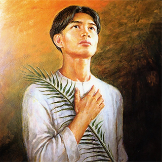

Santos Lorenzo de Manila Ruiz y quince compañeros mártires, tanto presbíteros como religiosos
y seglares, sembradores de la fe cristiana en Filipinas, Formosa y otras islas japonesas, a
causa de lo cual, por decreto del supremo jefe del Japón, Tokugawa Yemitsu, en dis tintos días
consumaron en Nagasaki su martirio por amor a Cristo, pero celebrados en única conmemoración
(1633-1637)
Integran el grupo: santos Domingo Ibáñez de Erquicia, Jacobo Kyuhei Gorobioye Tomonaga, Antonio González,
Miguel de Aozaraza, Guillermo Courtet, Vicente Shiwozuka, Lucas Alfonso Gorda, Jordán (Jacinto) Ansalone y
Tomás Hioji Rokuzayemon Nishi, presbíteros de la Orden dominicana; Francisco Shoyemon, Miguel Kurobioye y
Mateo Kohioye, religiosos de la misma Orden; Magdalena de Nagasaki, virgen de la Tercera Orden de San Agustín;
Marina de Omura, virgen de la Tercera Orden dominicana; Lázaro de Kyoto, seglar.
DOMINGO IBÁÑEZ DE ERQUICIA, español, sacerdote dominico. Nace en Régil (San Sebastián), hijo de la Provincia
de España hasta su afiliación a la Provincia del Rosario. En Manila enseña en el Colegio de Santo Tomás y
predica el Evangelio en diferentes lugares de Filipinas. Pasa a Japón en 1623, donde trabaja clandestinamente. Denunciado
por un cristiano apóstata, es encarcelado y ajusticiado. Desempeñó un importante papel, como Vicario
provincial de la misión. Se conserva una parte de su epistolario. Edad, 44 años.
Fecha de beatificación: El Papa Juan Pablo II beatificó a este grupo de mártires el 18 de febrero de 1981. en Manila
(Filipinas)
1633, (AGOSTO Y OCTUBRE)
FRANCISCO SHOYEMON, japonés, cooperador dominico. Compañero de apostolado del P. Ibáñez de Erquicia. Arrestado en 1633, toma el hábito dominicano en la cárcel. Es
ajusticiado junto a su padre espiritual.
SANTIAGO KYUSHEI TOMONAGA DE SANTA MARÍA, japonés, sacerdote dominico. De familia noble cristiana de Kyudetsu, estudia con los jesuitas en Nagasaki. Es
expulsado del Japón en 1614 cuando era catequista. En Manila se ordena sacerdote, misionero en Taiwan, regresa a su patria en 1632, con la finalidad de ayudar a sus hermanos
cristianos. Es arrestado y torturado, muriendo por "ser religioso y haber propagado la fe evangélica". Es el más anciano del grupo: 51 años.

Nombre:
Lorenzo (Masculino)
Celebran:
Los Lorenzo suelen celebrar el
10-ago: San Lorenzo
Falleció:
En Nagasaki, en el actual Japón
Proceso:
Beatificado el 1981 por Juan Pablo
II
Canonizado:
El 1987 por Juan Pablo II
Celebración:
28 de septiembre
MIGUEL KUROBIOYE, japonés, catequista laico. Compañero de apostolado del P. de Santa María, OP, es encarcelado y torturado, revelando el escondite del P. de Santa María.
Arrepentido, va con él al martirio, confesando su fe.
LUCAS ALONSO DEI. ESPÍRITU SANTO, español, sacerdote dominico. Nace en Carracedo (Astorga), dominico de la Provincia de España, se pasa a la Provincia del Rosario
en 1617. Profesor en el Colegio de Santo Tomás de Manila, misionero en Cagayan, en 1623 va al Japón donde trabaja con gran coraje y riesgo de su vida durante diez años. Arrestado
en Osaka en 1633, fue torturado y martirizado en Nagasaki. Edad, 39 años.
MATEO KOHIOYE DEL ROSARIO, japonés, natural de Arima. Catequista y ayudante del B. Lucas Alonso, se hace novicio de la Orden. Arrestado en Osaka en 1633, rechaza
toda propuesta de dinero y soporta horribles torturas, permaneciendo fiel a Cristo, hasta la muerte. Tenía 18 años.
1634, (OCTUBRE-NOVIEMBRE)
MAGDALENA DE NAGASAKI, japonesa, terciaria agustina y dominica. Hija de cristianos martirizados, se consagra a Dios y es guiada espiritualmente por los agustinos recoletos
y después por el dominico Ansalone. Después del arresto del P. Ansalone, Magdalena se presenta a la guardia proclamándose cristiana. Torturada en forma cruel, inamovible
en su fe, es colgada del patíbulo donde permaneció viva durante trece días.
MARINA DE OMURA, japonesa. En 1626 ingresa en la Tercera Orden Dominicana, siendo de gran ayuda para los misioneros. Arrestada en 1634, es sometida a vergonzosas
humillaciones y finalmente conducida a la hoguera, dando un sublime ejemplo de "mujer fuerte".
JACINTO JORDÁN ANSALONE, italiano, sacerdote dominico. Nativo de S. Stefano Quisquina (Agrigento), habiendo profesado en la Provincia de Sicilia, pasa a la Provincia
del Santo Rosario. En Filipinas desarrolla su apostolado entre los pobres y enfermos. En el año 1632 va al Japón, donde trabaja por dos años. Arrestado en el 1634, soporta con
firmeza las torturas, y es colgado del patíbulo. Edad, 36 años.
TOMÁS HIOJI NISHI DE SAN JACINTO, japonés, sacerdote dominico. Hijo de cristianos martirizados de Hirado, y discípulo de los jesuitas de Nagasaki. Expulsado de su
país por la persecución, emigra a Manila en el año 1614. Estudiante en el Colegio de Santo Tomás, se traslada a las misiones de Taiwan, regresando posteriormente a su patria
en plena persecución religiosa. Entre grandes peligros trabaja durante cinco años. Arrestado, es torturado y condenado a muerte. Edad, 44 años.
1637, (SEPTIEMBRE)
En el año 1636 los dominicos de Manila organizaron una expedición de voluntarios a fin de ayudar a los cristianos del Japón. Cuando llegaron a la isla de Okinawa fueron arrestados
y permanecieron en la cárcel más de un año antes de ser trasladados y condenados a muerte por el tribunal de Nagasaki. Ellos son:
ANTONIO GONZÁLEZ, español, sacerdote dominico. Natural de León, se hace dominico en la Provincia de España y después se pasa a la Provincia del Rosario, trasladándose
a Manila en 1631, en donde será profesor y rector del Colegio de Santo Tomás, siendo un hombre de mucha oración y penitencia. En 1636 guía un grupo de misioneros al Japón,
donde es rápidamente arrestado y muere en la cárcel después de un año, extenuado por los tormentos. Edad, 45 años.
GUILLERMO COURTET o TOMAS DE S. DOMINGO, francés, sacerdote dominico. Nacido en Sérignan (Montpellier), de familia noble, ingresa como dominico en la Congregación
reformada de San Luis, pasa a la Provincia del Rosario y se traslada a Filipinas, en 1634, en donde es profesor del Colegio de Santo Tomás. En Japón murió entre torturas
elevando alabanzas a la Virgen del Rosario y recitando salmos. Edad, 47 años.
MIGUEL DE AOZARAZA, español, sacerdote dominico. Natural de Oñate (Guipúzcoa), ingresa como dominico en la provincia de España y posteriormente se pasa a la Provincia
del Rosario. En Filipinas trabaja en la Misión de Bataan (Luzón). Refutó apostatar de su fe y aceptó con alegría tremendos suplicios. Edad, 39 años.
VICENTE SCHIWOZUKA DE LA CRUZ, japonés, sacerdote dominico. De familia cristiana, discípulo de los jesuitas de Nagasaki, catequista. En 1614 es expulsado del Japón
por ser cristiano. En Manila se ordena de sacerdote y desarrolla su apostolado entre los exilados japoneses. Antes de regresar a su patria con el P. González, toma el hábito dominicano
en 1636. Después de un año de cárcel y torturado cede a la apostasía, pero rápidamente se arrepiente y sale con los demás compañeros camino del patíbulo, profesando
su fe.
LÁZARO DE KYOTO, japonés, laico. Atacado por la lepra, es deportado con otros leprosos cristianos en Filipinas. En 1636 se une como guía e intérprete del grupo del P. González;
no resistiendo las torturas, reniega por pocas horas de la fe, pero arrepentido muere por Cristo junto a los demás.
LORENZO Ruiz, filipino, laico. Nacido en Binondo (Manila) de padre chino y madre filipina. Educado por los dominicos y ayudante de ellos, se hace miembro de la Confraternidad
del Rosario. Se casa y es padre de tres hijos. Implicado en un oscuro hecho de sangre, se unió al grupo del P. González para salvarse. En Japón fue arrestado y se declaró
dispuesto a dar mil veces la vida por Cristo. Es el Protomártir de Filipinas.
EL MILAGRO PROPUESTO PARA LA CANONIZACIÓN
Ocurrió en Manila el año 1983 por la invocación al grupo en favor de Cecilia Alegría Policarpio, niña de dos años, curada de forma completa y definitiva de una parálisis cerebral
anatómica y funcional, sin ninguna terapia eficaz. El milagro ha sido reconocido por Juan Pablo II el 1 de junio de 1987.
Las razones de los perseguidores
" Los seguidores de Cristo, llegados imprevistamente en Japón, no solamente vienen trayendo mercancía en sus naves, sino también, sin permiso alguno, han extendido y propagado
su malvada ley, destruyendo aquella buena y legítima y conspirando para derrocar el poder en nuestro país. Esto es el inicio de una gran calamidad, que con todo medio es
necesario evitar. El Japón es un país shintoista y budista, que venera a los Dioses, honra a Buda y tiene en gran estima el camino de la benevolencia (confucionismo).
Los seguidores de los Padres (los cristianos) han desobedecido todos a las órdenes dadas por gobierno, despreciando la religión ... y destruyendo el bien. Viendo aquellos que
deben ser ajusticiados (los mártires) se alegran y corren detrás de ellos, espontáneamente, los adoran y los saludan. Tal es el supremo ideal de esta religión. Si no se la prohibe
inmediatamente, vendrán calamidades sin fin sobre el Estado. Que estos cristianos sean exterminados sin demora en todas las regiones del Japón, de forma que no tengan lugar
donde poner sus pies o sus manos. Si alguno se atreviera a contravenir esta orden, sea castigado con la muerte". (Tomado del edicto de 1614, cuya doctrina es retomada substancialmente
en los de 1633 y 1636).